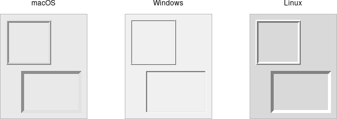
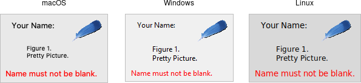
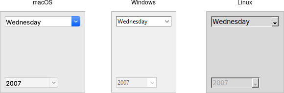

Basic Widgets
This chapter introduces the basic Tk widgets that you'll find in just about any user interface: frames, labels, buttons, checkbuttons, radiobuttons, entries, and comboboxes. By the end, you'll know how to use all the widgets you'd ever need for a typical fill-in-the-form type of user interface.
You'll find it easiest to read this chapter (and those following that discuss more widgets) in order. Because there is so much commonality between many widgets, we'll introduce certain concepts when describing one widget that will also apply to a widget we describe later. Rather than going over the same ground multiple times, we'll refer back to when the concept was first introduced.
At each widget is introduced, we'll refer to the widget roundup page for the specific widget, as well as the Tk reference manual page. As a reminder, this tutorial highlights the most useful parts of Tk and how to use them to build effective modern user interfaces. The reference documentation, which details everything that can be done in Tk, serves a very different purpose.
Frame
A frame is a widget that displays as a simple rectangle. Frames help to organize your user interface, often
both visually and at the coding level. Frames often act as master widgets for a geometry manager like grid,
which manages the slave widgets contained within the frame.

Frame widgets.
Frames are created using the ttk.Frame class:
frame = ttk.Frame(parent)
Frames can take several different configuration options, which can alter how they are displayed.
Requested Size
Typically, the size of a frame is determined by the size and layout of any widgets within it In turn, this is controlled by the geometry manager that manages the contents of the frame itself).
If, for some reason, you want an empty frame that does not contain other widgets, you can instead
explicitly set its size using the
width and/or height configuration options (otherwise, you'll end up with a
very small frame indeed).
Screen distances such as width and height are usually specified as a number of pixels screen.
You can also specify them via one of several suffixes. For example, 350 means
350 pixels, 350c means 350 centimeters, 350m means 350 millimeters, 350i means 350 inches, and 350p means 350 printer's points (1/72 inch).
Padding
The padding configuration option is used to request extra space around the inside of
the widget. If you're putting other widgets inside the frame, there will be a bit of a
margin all the way around. You can specify the same padding for all sides, different horizontal and
vertical padding, or padding for each side separately.
f['padding'] = 5 # 5 pixels on all sides f['padding'] = (5,10) # 5 on left and right, 10 on top and bottom f['padding'] = (5,7,10,12) # left: 5, top: 7, right: 10, bottom: 12
Borders
You can display a border around a frame widget to visually separate it from its surroundings.
You'll see this often used to make a part of the user interface look sunken or raised. To do this,
you need to set the borderwidth configuration option (which defaults to 0, i.e., no border),
and the relief option, which specifies the visual appearance of the border. This can be one of:
flat (default), raised, sunken, solid, ridge, or groove.
frame['borderwidth'] = 2 frame['relief'] = 'sunken'
Changing Styles
Frames have a style configuration option, which is common to all of the themed widgets.
This lets you control many other aspects of their appearance or behavior. This is a bit more
advanced, so we won't go into it in too much detail right now. But here's a quick example of creating a "Danger"
frame with a red background and a raised border.
s = ttk.Style()
s.configure('Danger.TFrame', background='red', borderwidth=5, relief='raised')
ttk.Frame(root, width=200, height=200, style='Danger.TFrame').grid()Label
A label is a widget that displays text or images, typically that users will just view but not otherwise interact with. Labels are used for to identify controls or other parts of the user interface, provide textual feedback or results, etc.

Label widgets.
Labels are created using the ttk.Label class. Often, the text or image the label will display are
specified via configuration options at the same time:
label = ttk.Label(parent, text='Full name:')
Like frames, labels can take several different configuration options, which can alter how they are displayed.
Displaying Text
The text configuration option (shown above when creating the label) is the most commonly used, particularly when
the label is purely decorative or explanatory. You can change what text is displayed by modifying this configuration option.
This can be done at any time, not only when first creating the label.
You can also have the widget monitor a variable in your script. Anytime the variable changes, the label will
display the new value of the variable. This is done with the textvariable option:
resultsContents = StringVar()
label['textvariable'] = resultsContents
resultsContents.set('New value to display')
Tkinter only allows you to attach widgets to an instance of the StringVar class, and not arbitrary Python variables.
This class contains all the
logic to watch for changes and communicate them back and forth between the variable and Tk. Use the get and set methods
to read or write the current value of the variable.
Displaying Images
Labels can also display an image instead of text. If you just want an image displayed in your
user interface, this is normally the way to do it. We'll go into images in more detail in a later chapter,
but for now, let's assume you want to display a GIF stored in a file on disk. This
is a two-step process. First, you will create an image "object." Then, you can tell the label to use that object
via its image configuration option:
image = PhotoImage(file='myimage.gif') label['image'] = image
Labels can also display both an image and text at the same time. You'll often see this in toolbar buttons. To do so, use the
compound configuration option. The default value is none, meaning display
only the image if present; if there is no image, display the text specified by the text or
textvariable options. Other possible values for the compound option are: text (text only), image (image only),
center (text in the center of image), top (image above text), left, bottom, and right.
Fonts, Colors, and More
Like with frames, you normally don't want to change things like fonts and colors directly.
If you need to change them (e.g., to create a special type of label), the preferred method would be to
create a new style, which is then used by the widget with the style option.
Unlike most themed widgets, the label widget also provides explicit widget-specific configuration options as an alternative. Again, you should use these only in special one-off cases when using a style didn't necessarily make sense.
You can specify the font used to display the label's text using the font configuration
option. While we'll go into fonts in more detail in a later chapter, here are the names of some
predefined fonts you can use:
TkDefaultFont:- Default for all GUI items not otherwise specified.
TkTextFont:- Used for entry widgets, listboxes, etc.
TkFixedFont:- A standard fixed-width font.
TkMenuFont:- The font used for menu items.
TkHeadingFont:- A font for column headings in lists and tables.
TkCaptionFont:- A font for window and dialog caption bars.
TkSmallCaptionFont:- Smaller captions for subwindows or tool dialogs.
TkIconFont:- A font for icon captions.
TkTooltipFont:- A font for tooltips.
label['font'] = "TkDefaultFont"
The foreground (text) and background color of the label can also be changed via the foreground and
background configuration options. Colors are covered in detail later, but you can specify them as either
color names (e.g., red) or hex RGB codes (e.g., #ff340a).
Labels also accept the relief configuration option discussed for frames to make them appear sunken or raised.
Layout
While the overall layout of the label (i.e., where it is positioned within the user interface, and how large it is) is determined by the geometry manager, several options can help you control how the label will be displayed within the rectangle the geometry manager gives it.
If the box given to the label is larger than the label requires for its contents, you can use
the anchor option to specify what edge or corner the label should be attached to,
which would leave any empty space in the opposite edge or corner. Possible values are
specified as compass directions: n (north, or top edge), ne, (north-east, or top right corner),
e, se, s, sw, w, nw or center.
Multi-line Labels
Labels can display more than one line of text. To do so, embed carriage
returns (\n) in the text (or textvariable) string. Labels can also
automatically wrap your text into multiple lines via the wraplength option,
which specifies the maximum length of a line (in pixels, centimeters, etc.).
You can also control how the text is justified via the justify option. It
can have the values left, center, or right. If you have only a single line of text, you
probably want the anchor option instead.
Button
A button, unlike a frame or label, is very much there to interact with. Users press a button to perform an action. Like labels, they can display text or images, but accept additional options to change their behavior.

Button widgets.
Buttons are created using the ttk.Button class:
button = ttk.Button(parent, text='Okay', command=submitForm)
Typically, their contents and command callback are specified at the same time. As with other widgets, buttons can take several different configuration options, including the standard style option,
which can alter their appearance and behavior.
Text or Image
Buttons take the same text, textvariable (rarely used), image, and compound
configuration options as labels. These control whether the button displays text and/or an image.
Buttons have a default configuration option. If specified as active, this tells Tk that the
button is the default button in the user interface; otherwise it is normal. Default buttons are invoked
if users hit the Return or Enter key). Some platforms and styles will draw this default button with
a different border or highlight. Note that setting this option doesn't create an event binding that will make the Return or Enter key
activate the button; that you have to do yourself.
The Command Callback
The command option connects the button's action and your application.
When a user presses the button, the script provided by the option is evaluated by the interpreter.
You can also ask the button to invoke the command callback from your application. That way, you don't need to repeat the command to be invoked several times in your program. If you change the command attached to the button, you don't need to change it elsewhere too. Sounds like a useful way to add that event binding on our default button, doesn't it?
action = ttk.Button(root, text="Action", default="active", command=myaction)
root.bind('<Return>', lambda e: action.invoke())Standard behavior for dialog boxes and many other windows on most platforms is to set up a binding on
the window for the Return key (<Return> or <Key-Return>) to invoke the active button if it exists,
as we've done here. If there is a "Close" or "Cancel" button, create a binding to the Escape key (<Key-Escape>).
On macOS, you should additionally bind the Enter key on the keyboard (<KP_Enter>) to the active
button, and Command-period (<Command-.>) to the close or cancel button.
Button State
Buttons and many other widgets start off in a normal state. A button will respond to mouse movements, can be pressed, and will invoke its command callback. Buttons can also be put into a disabled state, where the button is greyed out, does not respond to mouse movements, and cannot be pressed. Your program would disable the button when its command is not applicable at a given point in time.
All themed widgets maintain an internal state, represented as a series of binary flags. Each flag can either be set (on) or cleared (off).
You can set or clear these different flags, and check the current setting using the state and instate methods.
Buttons make use of the disabled flag to control whether or not users can press the button. For example:
b.state(['disabled']) # set the disabled flag b.state(['!disabled']) # clear the disabled flag b.instate(['disabled']) # true if disabled, else false b.instate(['!disabled']) # true if not disabled, else false b.instate(['!disabled'], cmd) # execute 'cmd' if not disabled
Note that these commands accept an array of state flags as their argument.
The full list of state flags available to themed widgets is: active, disabled, focus, pressed, selected,
background, readonly, alternate, and invalid. These are described in the
themed widget reference. While all widgets have the same set of state flags, not all states
are meaningful for all widgets. It's also possible to get fancy in the state and instate methods
and specify multiple state flags at the same time.
The state and instate methods replace the older state configuration option (which took the values normal or
disabled).
That configuration option is actually still available for themed widgets in Tk 8.5, but "write-only," which means that
changing the option calls the appropriate state command. It's mainly intended as a convenience so you can
specify a widget should be disabled when you first create it. However, any changes made using the new state
command do not update the configuration option. To avoid confusion, you should update your code to
use the new state flags for all themed widgets.
Checkbutton
A checkbutton widget is like a regular button that also holds a binary value of some kind (i.e., a toggle). When pressed, a checkbutton flips the toggle and then invokes its callback. Checkbutton widgets are frequently used to allow users to turn an option on or off.

Checkbutton widgets.
Checkbuttons are created using the ttk.Checkbutton class. Typically, their contents and behavior are specified at the same time:
measureSystem = StringVar() check = ttk.Checkbutton(parent, text='Use Metric', command=metricChanged, variable=measureSystem, onvalue='metric', offvalue='imperial')
Checkbuttons use many of the same options as regular buttons but add a few more. The text, textvariable,
image, and compound configuration options control the display of the label (next to the checkbox itself).
Similarly, the command option lets you specify a command to be called every time a user toggles the checkbutton; and the
invoke method will also execute the same command.
The state and instate methods allow you to manipulate the disabled state flag to enable or disable the checkbutton.
Widget Value
Unlike regular buttons, checkbuttons also hold a value. We've seen before how the textvariable option can link
the label of a widget to a variable in your program. The variable option for checkbuttons behaves similarly, except
it links a variable to current value of the widget. The variable is updated whenever the widget is toggled. By default,
checkbuttons use a value of 1 when the widget is checked, and 0 when not checked. These can be changed to
something else using the onvalue and offvalue options.
A checkbutton doesn't automatically set (or create) the linked variable. Therefore, your program needs to initialize it to the appropriate starting value.
What happens when the linked variable contains neither the onvalue or the offvalue (or even doesn't exist)? In that case,
the checkbutton is put into a special "tristate" or indeterminate mode. When in this mode, the checkbox might display a single dash, instead of
being empty or holding a checkmark. Internally, the state flag alternate is set, which you can inspect
via the instate method:
check.instate(['alternate'])
While we've been using an instance of the StringVar class, Tkinter provides other
variable classes that can hold booleans, integers, or floating-point numbers. You can always
use a StringVar (because the Tcl API that Tkinter uses is string-based) but can choose one of the others if
the data that will be stored in it fits the type. All are subclasses of the base class Variable.
We saw in the feet to meters example that you can call the get method of a Variable to retrieve its value or
the set method to provide a new value. You can also supply an initial value when you instantiate it.
s = StringVar(value="abc") # default value is '' b = BooleanVar(value=True) # default is False i = IntVar(value=10) # default is 0 d = DoubleVar(value=10.5) # default is 0.0
Radiobutton
A radiobutton widget lets you choose between one of several mutually exclusive choices. Unlike a checkbutton, they are not limited to just two options. Radiobuttons are always used together in a set, where multiple radiobutton widgets are tied to a single choice or preference. They are appropriate to use when the number of options is relatively small, e.g., 3-5.

Radiobutton widgets.
Radiobuttons are created using the ttk.Radiobutton class. Typically, you'll create and initialize several of them at once:
phone = StringVar() home = ttk.Radiobutton(parent, text='Home', variable=phone, value='home') office = ttk.Radiobutton(parent, text='Office', variable=phone, value='office') cell = ttk.Radiobutton(parent, text='Mobile', variable=phone, value='cell')
Radiobuttons share most of the same configuration options as checkbuttons. One exception is that the
onvalue and offvalue options are replaced with a single value option.
Each radiobutton in the set will have the same linked variable, but a different value.
When the variable holds the matching value, that radiobutton will visually indicate it is selected.
If it doesn't match, the radiobutton will be unselected.
If the linked variable doesn't exist, or you don't specify one with the variable option,
radiobuttons also display as "tristate" or indeterminate. This can be checked via the alternate state flag.
Entry
An entry widget presents users with a single line text field where they can type in a string value. These can be just about anything: a name, a city, a password, social security number, etc.

Entry widgets.
Entries are created using the ttk.Entry class:
username = StringVar() name = ttk.Entry(parent, textvariable=username)
A width configuration option may be specified to provide the number of
characters wide the entry should be. This allows you, for example, to display a shorter
entry for a zip or postal code.
Entry Contents
We've seen how checkbutton and radiobutton widgets have a value associated with them.
Entries do as well, and that value is usually accessed through a linked variable
specified by the textvariable configuration option.
Unlike the various buttons, entries don't have a text or image beside them to identify them. Use a separate label widget for that.
You can also get or change the value of the entry widget without going
through the linked variable. The get method returns the current value, and
the delete and insert methods let you change the contents, e.g.
print('current value is %s' % name.get())
name.delete(0,'end') # delete between two indices, 0-based
name.insert(0, 'your name') # insert new text at a given indexWatching for Changes
Entry widgets don't have a command option to invoke a
callback whenever the entry is changed. To watch for changes, you should watch
for changes to the linked variable. See also "Validation", below.
def it_has_been_written(*args):
...
username.trace_add("write", it_has_been_written)
You'll be fine if you stick with simple uses of trace_add like that shown above. You might want to know that
this is a small part of a much more complex system for observing variables and invoking callbacks when they are read, written,
or deleted. You can trigger multiple callbacks, add or delete them (trace_remove), and introspect
them (trace_info).
These methods also replace a now-deprecated set of older methods (trace, trace_variable, trace_vdelete,
and trace_vinfo) that should not be used.
StringVar (or any subclass of Variable).
Both the older and newer tracing tools are a very thin (and not terribly Pythonic) front end to Tcl's trace command.
Passwords
Entries can be used for passwords, where the actual contents are displayed as a bullet or other symbol.
To do this, set the show configuration option to the character you'd like to display.
passwd = ttk.Entry(parent, textvariable=password, show="*")
Widget States
Like the various buttons, entries can also be put into a disabled state via the state command (and queried
with instate). Entries can also use the state flag readonly; if set, users cannot change the entry,
though they can still select the text in it (and copy it to the clipboard). There is also an invalid
state, set if the entry widget fails validation, which leads us to...
Validation
Users can type any text they like into an entry widget. However, if you'd like to restrict what they can type into the entry, you can do so with validation. For example, an entry might only accept an integer or a valid zip or postal code.
Your program can specify what makes an entry valid or invalid, as well as when to check its validity. As we'll see soon, the two are related. We'll start with a simple example, an entry that can only hold an integer up to five digits long.
The validation criteria is specified via an entry's validatecommand configuration option. You supply a piece of
code whose job is to validate the entry. It functions like a widget callback or event binding, except that it returns
a value (whether or not the entry is valid). We'll arrange to validate the entry on any keystroke, which
is specified by providing a value of key to the validate configuration option.
import re
def check_num(newval):
return re.match('^[0-9]*$', newval) is not None and len(newval) <= 5
check_num_wrapper = (root.register(check_num), '%P')
num = StringVar()
e = ttk.Entry(root, textvariable=num, validate='key', validatecommand=check_num_wrapper)
e.grid(column=0, row=0, sticky='we')
A few things are worth noting. First, as with event bindings, we can access more information about the conditions that
triggered the validation via percent substitutions. We used one of these here:
%P is the new value of the entry if the validation passes. We'll use a simple regular expression and a length
check to determine if the change is valid. To reject the change, our validation command can
return a false value, and the entry will remain unchanged.
Taking advantage of these percent substitutions requires a bit of gymnastics. You'll recall that Tkinter abstracts away percent
substitutions in event binding callbacks. There, all of the event parameters are wrapped into an event object which is always passed to the
callback. There's not an equivalent abstraction for validation callbacks. Instead, we have to choose which percent substitutions
we're interested in. The register method (which can be called on any widget, not just
root) creates a Tcl procedure which will call our Python function. The percent substitutions we've chosen will be
passed to it as parameters.
Let's extend our example so that the entry will accept a US zip code, formatted as "#####" or "#####-####" ("#" can be any digit). We'll still do some validation on each keystroke (only allowing entry of numbers or a hyphen). However, We can no longer fully validate the entry on every keystroke; if they've just typed the first digit, it's not valid yet. So full validation will only happen when the entry loses focus (e.g., a user tabs away from it). Tk refers to this as revalidation, in contrast with prevalidation (accepting changes on each keystroke).
How should we respond to errors? Let's add a message reminding users of the format. It will appear if they type a wrong key or tab away from the entry when it's not holding a valid zip code. We'll remove the message when they return to the entry or type a valid key. We'll also add a (dummy) button to "process" the zip code, which will be disabled unless the zip entry is valid. Finally, we'll also add a "name" entry so you can tab away from the zip entry.
import re
errmsg = StringVar()
formatmsg = "Zip should be ##### or #####-####"
def check_zip(newval, op):
errmsg.set('')
valid = re.match('^[0-9]{5}(\-[0-9]{4})?$', newval) is not None
btn.state(['!disabled'] if valid else ['disabled'])
if op=='key':
ok_so_far = re.match('^[0-9\-]*$', newval) is not None and len(newval) <= 10
if not ok_so_far:
errmsg.set(formatmsg)
return ok_so_far
elif op=='focusout':
if not valid:
errmsg.set(formatmsg)
return valid
check_zip_wrapper = (root.register(check_zip), '%P', '%V')
zip = StringVar()
f = ttk.Frame(root)
f.grid(column=0, row=0)
ttk.Label(f, text='Name:').grid(column=0, row=0, padx=5, pady=5)
ttk.Entry(f).grid(column=1, row=0, padx=5, pady=5)
ttk.Label(f, text='Zip:').grid(column=0, row=1, padx=5, pady=5)
e = ttk.Entry(f, textvariable=zip, validate='all', validatecommand=check_zip_wrapper)
e.grid(column=1, row=1, padx=5, pady=5)
btn = ttk.Button(f, text="Process")
btn.grid(column=2, row=1, padx=5, pady=5)
btn.state(['disabled'])
msg = ttk.Label(f, font='TkSmallCaptionFont', foreground='red', textvariable=errmsg)
msg.grid(column=1, row=2, padx=5, pady=5, sticky='w')
Notice that the validate configuration option has been changed from key to all.
That arranges for the validatecommand callback to be invoked on not only keystrokes but other triggers.
The trigger is passed to the callback using the %V percent substitution.
The callback differentiated between key and focusout triggers (you can also check for focusin).
There's a few more things to know about validation. First, if your validatecommand ever generates an error
(or doesn't return a boolean), validation will be disabled for that widget. Your callback can modify the entry, e.g.,
change its textvariable. You can ask the widget to validate at any time by calling
it's validate method, which returns true if validation passes (the %V substitution is set to forced).
There is an invalidcommand configuration option (which works like validatecommand) that is called whenever
validation fails. You can use it to accomplish nasty things like forcing the focus back on the widget that didn't validate.
In practice, it's rarely used. As mentioned earlier, the entry's invalid state flag (which can be checked via
the instate invalid method) is automatically updated as validation succeeds or fails.
Other percent substitutions allow you to get the entry's contents prior to editing (%s), differentiate between insert and delete (%d), where an insert or delete occurs (%i), what is being inserted or deleted (%S), the
current setting of the validate option (%v) and the name of the widget (%W).
Combobox
A combobox widget combines an entry with a list of choices. This lets users either choose from a set of values you've provided (e.g., typical settings), but also put in their own value (e.g., for less common cases).

Combobox widgets.
Comboboxes are created using the ttk.Combobox class:
countryvar = StringVar() country = ttk.Combobox(parent, textvariable=countryvar)
Like entries, the textvariable option links a variable in your program to the
current value of the combobox. As with other widgets, you should initialize
the linked variable in your own code.
A combobox will generate a <<ComboboxSelected>> virtual event that you can bind to whenever its value changes.
(You could also trace changes on the textvariable, as we've seen in the previous few widgets we covered.
Binding to the event is more straightforward, and so tends to be our preferred choice.)
country.bind('<<ComboboxSelected>>', function)Predefined Values
You can provide a list of values that users can choose from using the values configuration
option:
country['values'] = ('USA', 'Canada', 'Australia')If set, the readonly state flag will restrict users to making choices only from the list
of predefined values, but not be able to enter their own (though if the current value of the
combobox is not in the list, it won't be changed).
country.state(["readonly"])
If you're using the combobox in readonly mode, I'd recommend
that when the value changes (i.e., on a <<ComboboxSelected>> event), that
you call the selection_clear method. It looks a bit odd visually
without doing that.
You can also get the current value using the get method, and change the current value using the set
method (which takes a single argument, the new value).
As a complement to the get and set methods, you can also use the current method to determine
which item in the predefined values list is selected. Call current with no arguments; it will
return a 0-based index into the list, or -1 if the current value is not in the list. You can select
an item in the list by calling current with a single 0-based index argument.
Want to associate some other value with each item in the list so that your program can use one value internally, but it gets displayed in the combobox as something else? You'll want to have a look at the section entitled "Keeping Extra Item Data" when we get to the discussion of listboxes in a couple of chapters from now.